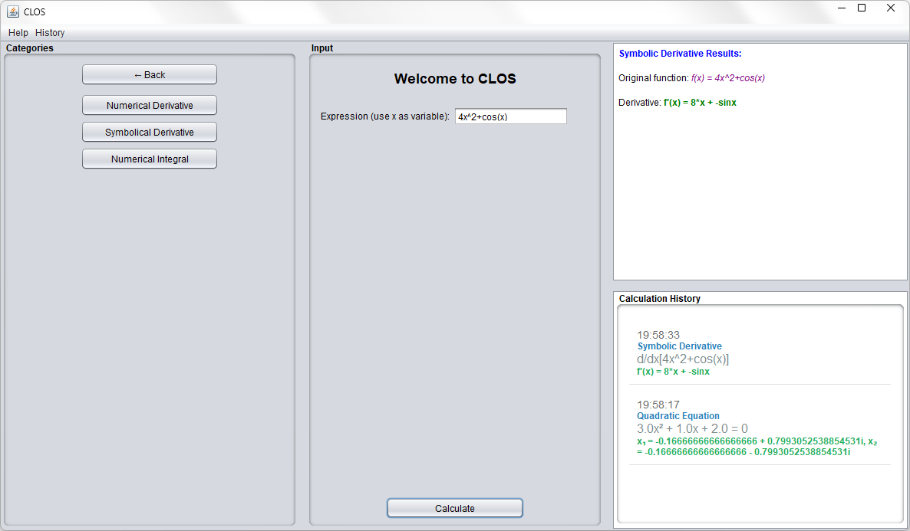
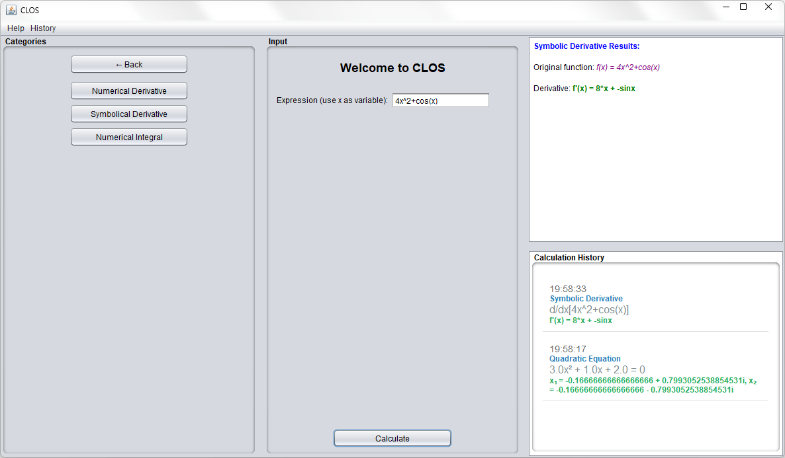

Perform basic arithmetic operations with ease and precision.
Handle complex equations, including non-real numbers and step-by-step solutions.
Visualize mathematical functions with advanced graphing capabilities.
Compute derivatives, integrals, trigonometry, and more complex operations.
Learn math concepts with step-by-step solutions and visual representations that make complex topics easier to understand.
Demonstrate mathematical concepts effectively in the classroom with powerful visualization and solving tools.
Solve complex mathematical problems quickly and accurately with our comprehensive suite of tools.
 
